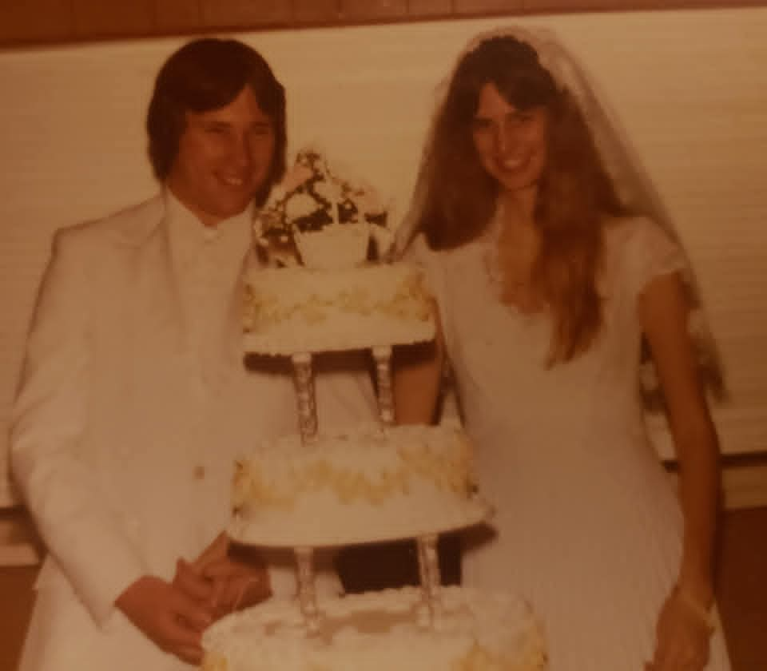
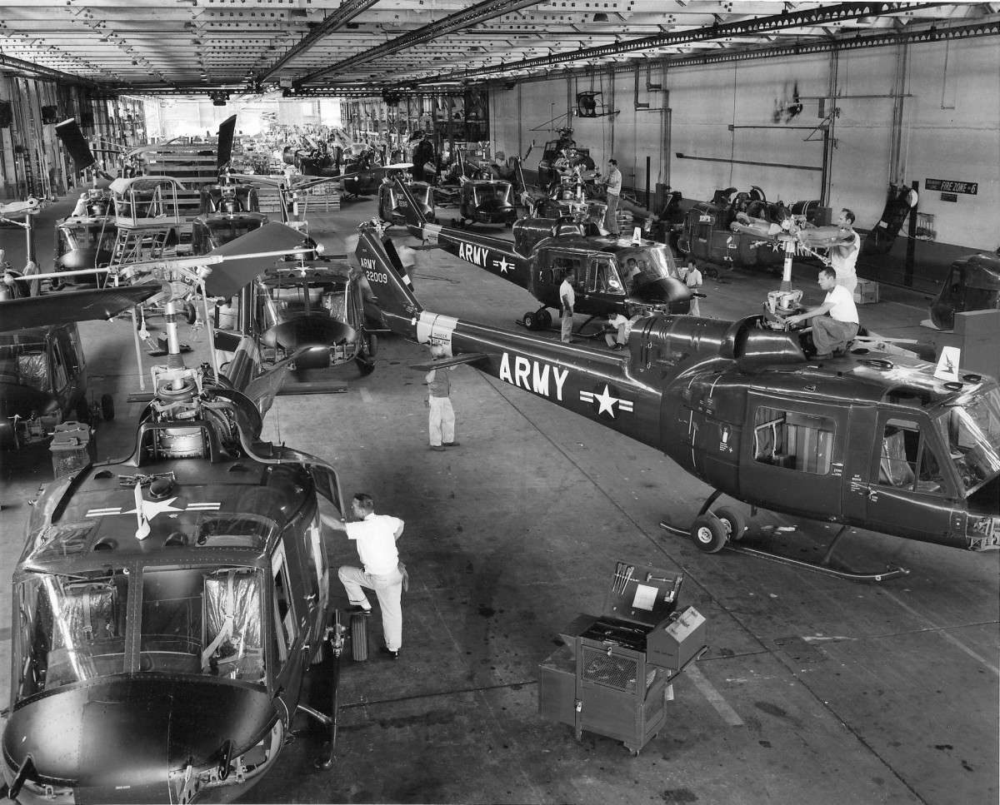
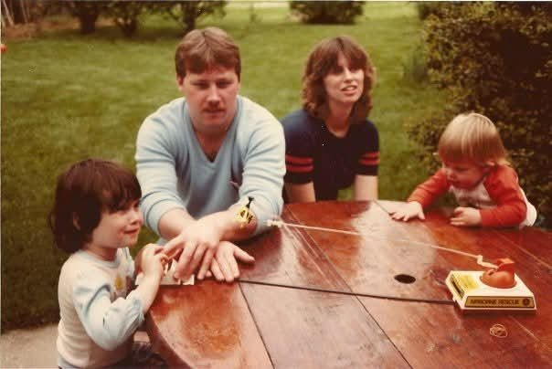

Susan Ruth Shamblen (first wife) FAMILY ACCOUNT; Deborah Lynn Gieger (second wife) FAMILY ACCOUNT; Kimberly McPhail (later wife, Colorado) FAMILY ACCOUNT — marriage dates/places not in notes read UNPROVED
Garry Anthony Brewster, born 24 December 1959 in Cincinnati, is the third child of Homer William Brewster Jr. and Judith Mae Palmer {SUP}.
He married Susan Ruth Shamblen, his first wife {FAM}; he later married Deborah Lynn Gieger (second wife) and Kimberly McPhail in Colorado {FAM}. He is named in the family account as the holder of stories about Barry and Barry's father {FAM}.
Garry served in the US Army as a helicopter mechanic, about 1979–1981, as a lead only (Fort Rucker training lead, Fort Riley, Kansas, station lead) — unit and exact dates unknown {UNP}.
Photo Gallery
Living family members are left out of public photos.
Garry, Army military portrait

Garry and Susan, wedding

Garry's Army helicopter hangar

Garry and Susan with Rick and Dawn
Sources and Evidence
Homer William Brewster Jr. × Judith Mae Palmer couple profile Doc — Children list FAMILY ACCOUNT
Lawrence Richard Shamblen × Ruth Laverne McKinney couple profile Doc — Susan married Garry Brewster FAMILY ACCOUNT
Geni profile, read via Rick's logged-in Geni tree 2026-11-02 — parents/spouse verified from parent children links SUPPORTED
Geni, read-only 2026-11-02: Garry Anthony Brewster, 6000000150671513912 — b. 24 Dec 1959 Cincinnati, son of Homer Jr. × Judy, ex-husband of Susan Ruth Moore SUPPORTED
Garry × Susan Notes, 2026-10-08: Garry's other wives (Deborah Lynn Gieger, second; Kimberly McPhail, later, Colorado) FAMILY ACCOUNT
Garry × Susan dig, 2026-10-02: US Army helicopter mechanic, about 1979–1981, Fort Riley/Fort Rucker leads only UNPROVED
Grades: DOCUMENTED an original record says it · SUPPORTED several records point to it · FAMILY ACCOUNT the family's own telling · UNPROVED a lead, not proved.
Research Notes and Open Questions
Tree IDs were NOT found in public web search and are NOT in the parents' profile Doc — left blank, not invented.
Geni verified 2026-11-02, read-only: birthplace Cincinnati corrected from the earlier draft (previously unknown).
Other marriages (Deborah Lynn Gieger, Kimberly McPhail) added from the Garry × Susan Notes — they were not in the earlier draft. Children's names are withheld in this draft per the privacy rule for this compilation, except where the parents' profile attributes them.
WikiTree Brewster-4271 appears in the 2026-10-02 Garry × Susan PROFILES note only — not re-checked live, not added as a link here.
Wedding photo from the Garry × Susan Pictures folder (sibling folder).